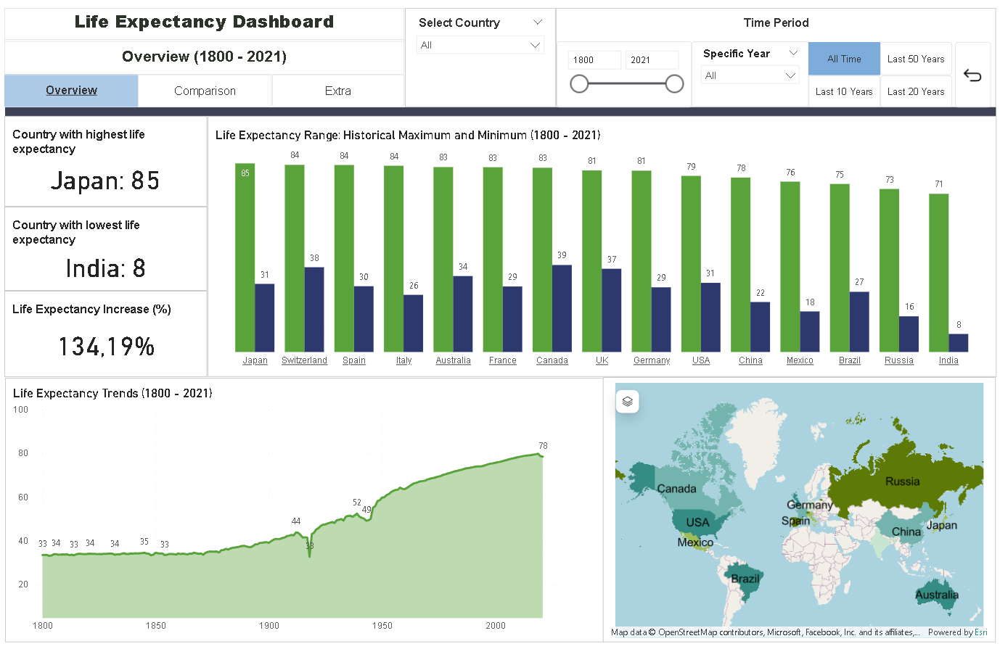
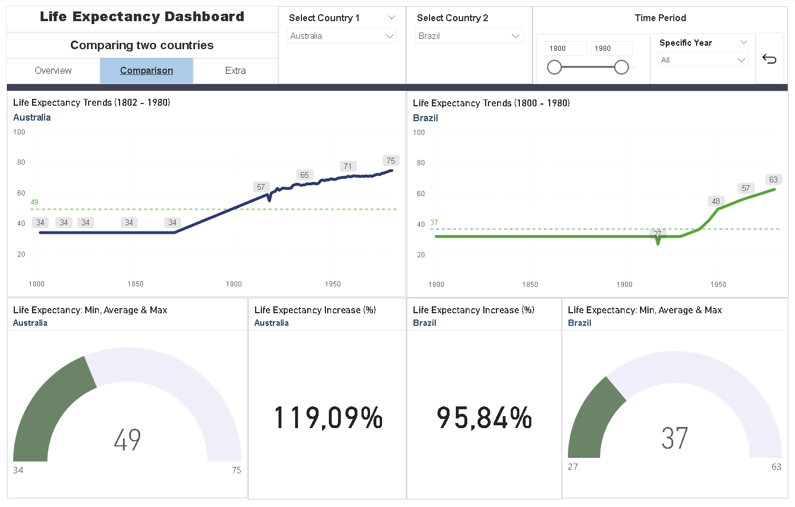
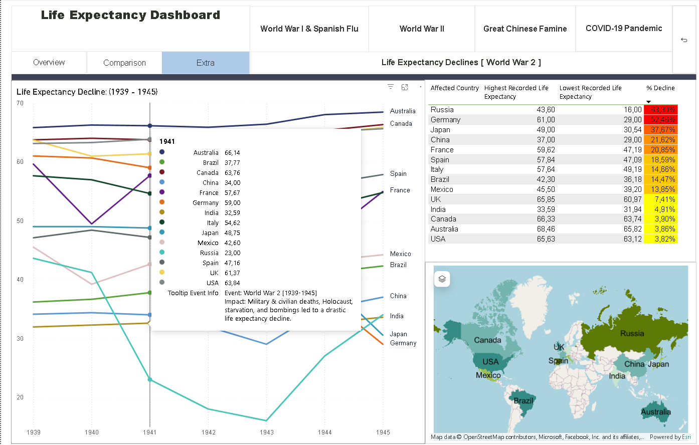

Levensverwachting
Als onderdeel van mijn DaatLab traineeship heb ik een Power BI-dashboard ontwikkeld over de levensverwachting van 15 landen tussen 1800-2021. Dit fictieve project richt zich op het analyseren van trends, het vergelijken van landen en het onderzoeken van de impact van historische gebeurtenissen op de levensverwachting.
  